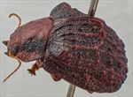
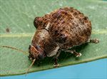
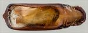
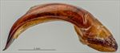
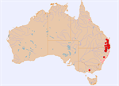

Click on images to enlarge

Male, Deepwater, N.E. New South Wales

Female, Spicer's Gap, S.E. Queensland

Adult, Glenburn, Victoria [photo Geoff Walker]
Photographer:
Geoff Walker

Aedeagus, dorsal view (Deepwater, N.E. New South Wales)

Aedeagus, lateral view (Deepwater, N.E. New South Wales)

Distribution (pale-coloured circles indicate records obtained from iNaturalist)
Ta04
Name
Trachymela papuligera (Stål)
Reference specimen
2002-345, Deepwater, N.E. New South Wales.
Adult Description
Length: ♂ (8.0)8.6–9.9 mm (n=19), ♀ 9.2–10.7 mm (n=28).
Colouration:
Head: Uniformly mid-brown, sometimes with area around antennal insertions slightly darker; labrum variable, straw-brown to black; mandible tips dark brown or black; antennae uniformly straw-brown or light brown.
Pronotum: Discal area brown, concolorous with head; foveal area mostly black in a broad band extending from anterior to posterior margins of prothorax; extreme lateral margins brown.
Scutellum: Brown, concolorous with or fractionally darker than adjacent area of pronotum, edged in a darker shade of brown.
Elytra: Much of surface is brown, either concolorous with or (more often) darker than pronotal disc, usually black areas are interspersed among the brown, most commonly situated in angle between scutellum, humeral callus, and elytral summit, continuing the black on pronotum, and on the elytral disc behind middle where it often occupies a considerable area; elytral verrucae may be lighter or darker than surrounding substrate; elytral summit and transverse ridge that runs from summit always lighter than surrounding area; dorsal surface of humeral callus black with ventral surface brown.
Venter & Legs: Head, at least gula, and thoracic ventrites mostly black or very dark brown; abdominal ventrites and legs mid-brown or dark reddish-brown, with a patch of darker colour on femurs; inner surface of elytral epipleura black.
Cuticular Wax: Mostly brown, with dense layer in a triangle with base between the humeral calli and apex just behind elytral summit; covering is more sparse in a broad band behind elytral summit along elytral suture to apex, even more sparse on rest of elytra; very sparse sprinkling of brown on disc of pronotum, a somewhat thicker brown layer over foveal areas and patches of grey cover the scutellum and surrounding area on pronotum, as well as extreme lateral marginal area of pronotum.
Morphology:
Head: Punctures variable, usually moderate in size (pd ≈ 2–3×ef) and somewhat unevenly and moderately densely distributed, sometimes partially obliterated by rugose interstices that may include small unpunctured spaces and longitudinal ridges; a small unpunctured, elevated area is usually present adjacent to fronto-clypeal suture and close to eye. Antennae moderately long (AL/BL: ♂ 42–44%, ♀ 37–38%), filiform.
Pronotum: Almost evenly curved transversely over discal area; foveal depression prominent and deep so that margins are prominently explanate; disc rather variable, sometimes smooth with clearly defined and uniformly sized punctures that are almost uniformly distributed, or discal surface may be rough with punctures more variable in size; unpunctured spaces are sometimes present, especially along centre line of disc; punctures become larger and surface rougher towards margins, with surface roughness sometimes obliterating punctures near margins; foveal depression often with a small, relatively inconspicuous pustule at centre. Front margins join the lateral margins in a smoothly rounded right-angle, with lateral margin usually straight for about half their length, then curving slightly inwards and either continuing almost straight or curving very gradually to posterior margin; surface behind antero-lateral margin is sometimes slightly concave making the antero-lateral angles weakly mucronate; in a few specimens, the lateral margins are slightly crenulate.
Scutellum: Elongate in shape, surface finely granular, usually relatively flat or with a few small wrinkles, unpunctured.
Elytra: Prominently gibbous viewed laterally, very high (H/BL: ♂ 47–54%, ♀ 48–55%), with highest point a little in front of elytral summit. Surface very rugose, with elevated verrucae throughout; in the angle between scutellum, humeral callus, and summit these usually take the form of parallel, longitudinally oriented ridges while elsewhere on the elytra, the verrucae are discrete and often prominently elevated; elytral suture from scutellum to summit is very prominently carinate, with the carination continuing as a perpendicular ridge that usually terminates about halfway to edge of disc, less often continuing as an interrupted ridge to discal edge; verrucae posterior to this ridge are usually isolated but often longitudinally extended, less often joined into longer ridges by connecting, elevated interstices; interstices between verrucae and ridges quite smooth; punctures are small, relatively shallow, and widely spaced but distinct; elytral suture posterior to summit carinate; humeral callus very large and projecting, surface discontinuous under it. Vertical extension of epipleura considerable (HCE/PW = 0.36–0.43).
Venter: Prosternal process almost parallel-sided, closed anteriorly; setae prominently present at rear of prosternal process and on mesoventrite; a small clump of setae on anterior and median trochanter, a single seta on posterior trochanter; front edge of metaventrite beveled, truncate; inner edge of posterior of epipleurae lacking setae.
Male Genitalia (Aedeagus):
Dimensions: Relatively long (LPE/BL = 32–36%).
Dorsal view: Almost parallel-sided over most of its length or, more commonly, widening very slightly, from basal sulcus to middle of ostium, sometimes with an indentation in each side just before widest point (Victorian specimen), then converging towards apex gradually at first, then more rapidly, in a smooth arc; dorsal surface lightly sclerotized with dorso-median channel quite long but very faint; moderately long dorsolateral channels present adjacent to ostium; spatula wide, tip protruding as a slightly truncated triangle; ostium large, dorsal ostial processes extend almost to apical edge when extended.
Lateral view: Lightly and quite evenly curved throughout with curvature increasing noticeably at about 15% of length while thinning towards apex, tip deflexed.
Immature Stages
Unknown.
Similar species
This very distinctive species is unlikely to be confused with any other in the genus.
Notes
Taxonomy: Easily recognized from the very large humeral callus, and the strongly sculptured surface. The identification as Trachymela papuligera (Stål) is by by B.J. Selman from a NE New South Wales specimen.
Distribution & Abundance: Widespread in southeast Queensland and northern New South Wales, though seldom very abundant. The Victorian specimens are essentially identical to those in New South Wales and Queensland in external morphology. The records from far North Queensland consist of a single male specimen [QM] and a record on iNaturalist (M. Lagerwey); these are essentially identical to specimens from southern Australia.
Host Associations: Collected from a number of eucalypt species, including several species of ironbark (Eucalyptus crebra, E. siderophloia, and E. fibrosa), unspecified species of peppermints, red-gum group eucalypts, as well as two records from Blakella (B. tessellaris and B. maculata).
Morphological Variation: The aedeagus of the Victorian specimen is more slender than that of northern specimens and has a very small indentation in the sides at the level of the middle of the ostial opening.
Copyright © 2026. All rights reserved.
{kind=link}
{kind=link}

{kind=link}
{kind=link}
{kind=link}